O Gordonie Ramsayu
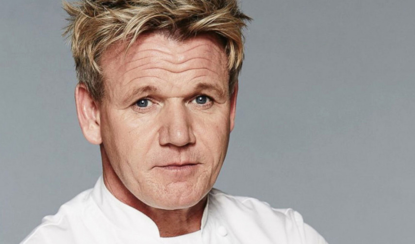 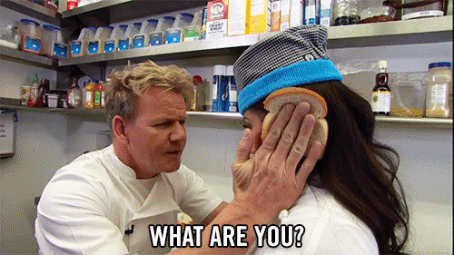 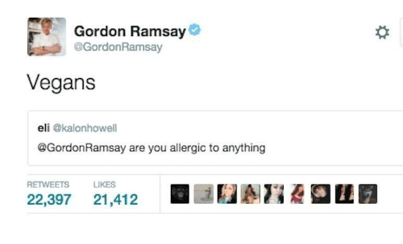 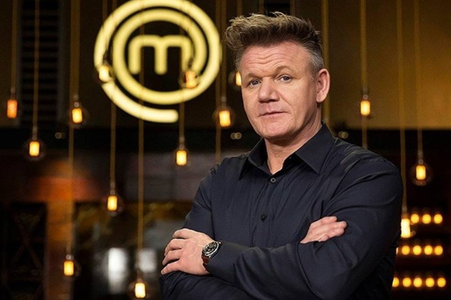 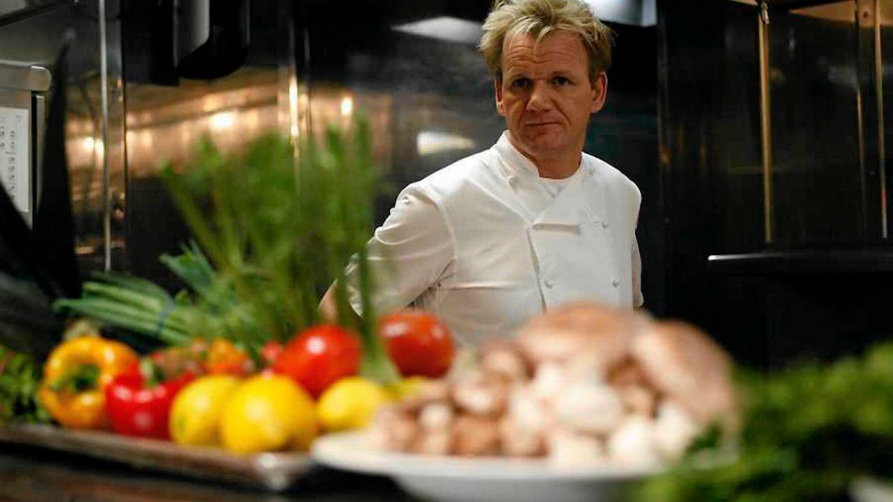Znany na całym świecie, wielokrotnie nagradzany przez gwazdki Michelin szef kuchni, Gordon Ramsay, otworzył szereg odnoszących sukcesy restauracji na całym świecie, od Wielkiej Brytanii i Francji po Singapur i Stany Zjednoczone. Gordon stał się także gwiazdą małego ekranu zarówno w Wielkiej Brytanii, jak i za granicą, z takimi programami jak Kitchen Nightmares, Hell's Kitchen, Hotel Hell i MasterChef US
Osiągnięcia

Gordon jest jednym z niewielu szefów którzy uzbierali aż 16 gwiazdek Michelin z jego restauracji na całym świecie. W rozpędzeniu kariery pomogły też występy w telewizji w takich programach jak: Hell's Kitchen, Kitchen Nightmares i MasterChef(występował nawet gościnnie w polskiej edycji Mastercheffa) Jest on autorem dużej ilości bestsellerowych książek kucharskich, dzieli się on swoją wiedzą i chce aby ludzie się szkolili w kuchni ponieważ jedzenie to bardzo ważna rzecz w naszym życiu Otrzymał on Order Imperium Brytyjskiego za swoje zasługi dla gastronomii.
Najpolularniejszę Dania
 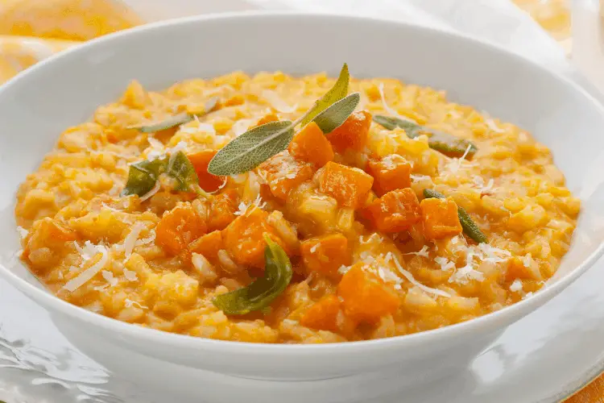
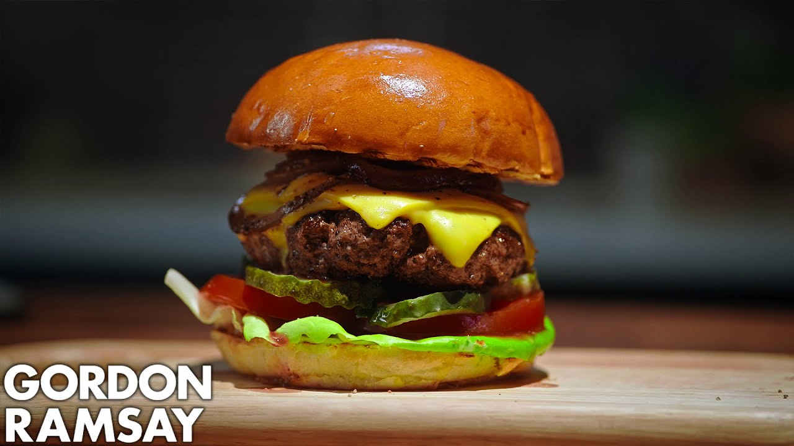
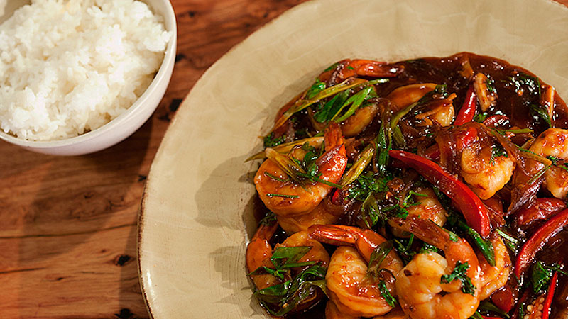
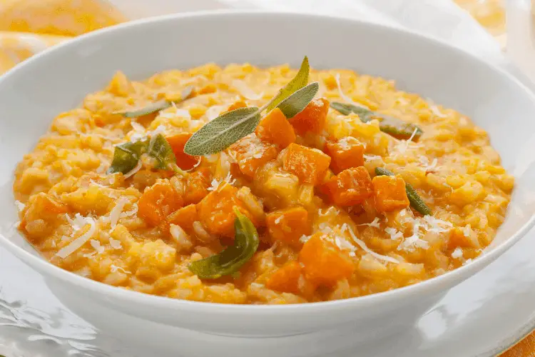
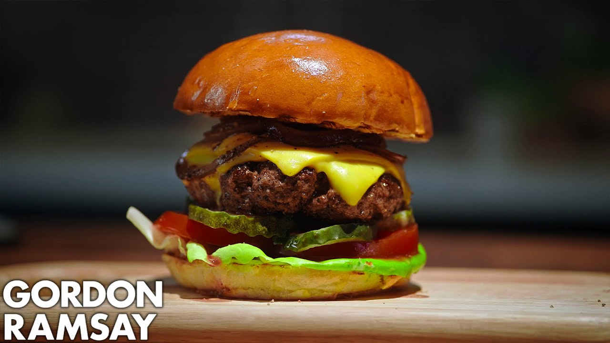
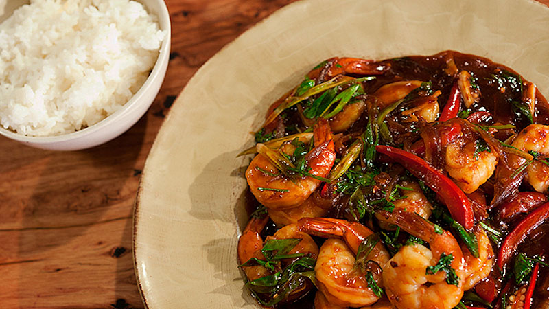
1. Beef Wellington - klasyczne danie angielskie, które składa się z polędwicy wołowej, pieczarków i cebuli, zawinięte w ciasto francuskie.
2. Risotto - włoskie danie ryżowe, które może być przygotowane na różne sposoby, np. z grzybami, szparagami, krewetkami czy szafranem.
3. Burger - Ramsay posiada wiele restauracji serwujących doskonałe burgery, w tym wieprzowe, wołowe, a nawet wegetariańskie.
4. Krewetki - popularny składnik wielu dań, np. spaghetti z krewetkami, krewetki w sosie czosnkowym czy krewetki w tempurze.